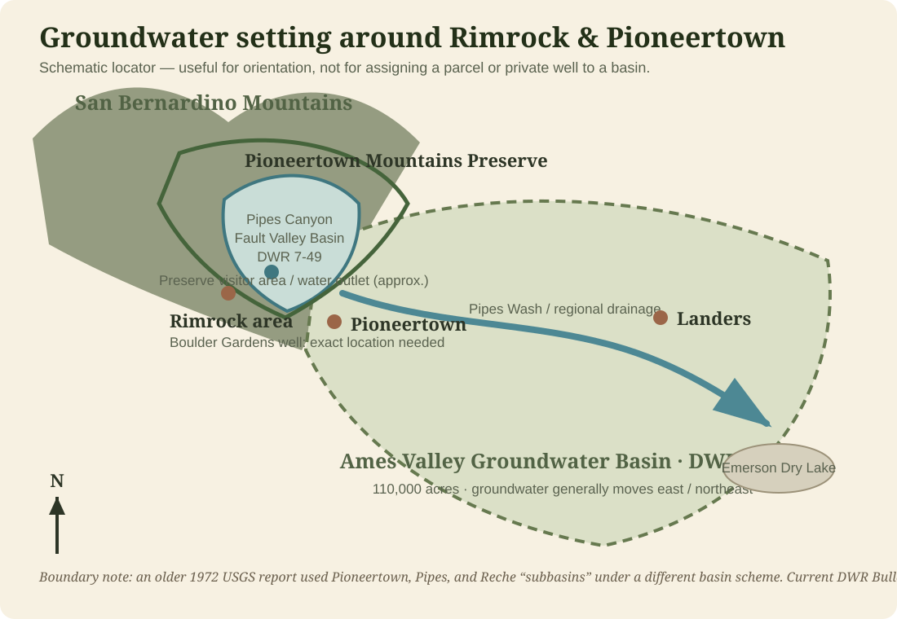
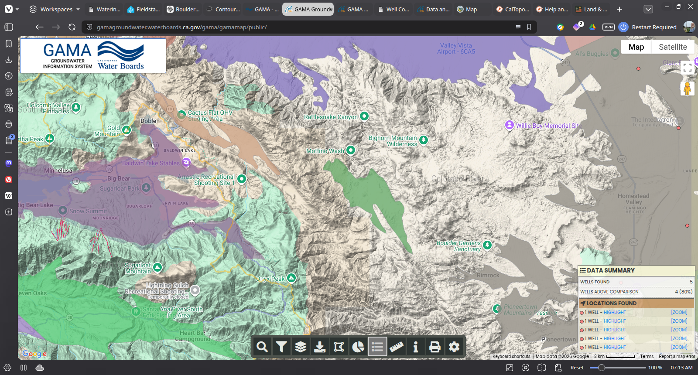
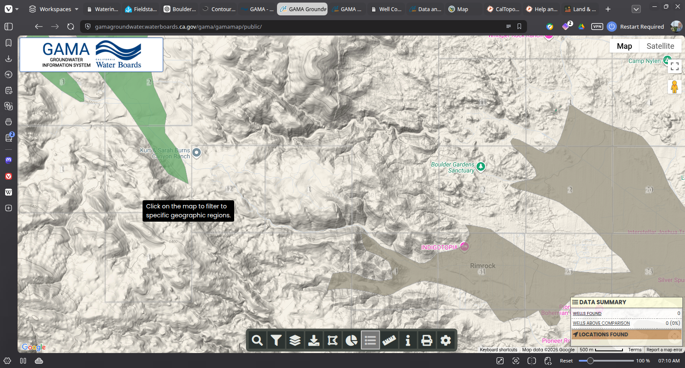
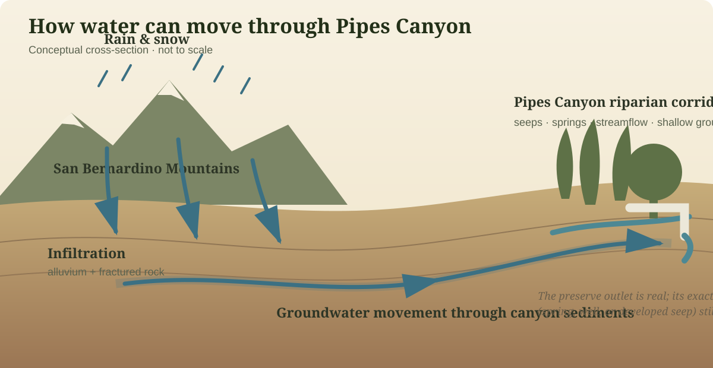

Watershed · Living Record
Where the
water comes from
Boulder Gardens lies below mountain creeks, springs, and desert washes. Some water remains visible. Much more continues through fractured rock and alluvial ground.

15.1 sq midrainage area above the Pipes Wash gauge
8.5 milesdocumented length of Antelope Creek
≈500 af/yrhistoric estimate of underflow through Pipes Wash
1,500 af/yranticipated East Ames–Reche recharge capacity
The Watershed in One View
From mountain weather to desert groundwater
These steps describe the regional pattern. They do not imply that water remains visible for the entire journey.
Groundwater Context
Boulder Gardens sits near several basin boundaries
These California GAMA views are useful for regional orientation. The colored shapes show mapped groundwater basins; they should not be read as underground lakes with sharp walls.


What these maps can and cannot tell us:
they establish regional basin context, but they cannot identify which water-bearing layer a particular
private well reaches. That requires the well location and completion record.
Three Surface Pathways
The named water around Boulder Gardens
One stream retains water in protected upper reaches; the others are primarily intermittent or ephemeral.
Pipes Creek / Pipes Wash
The Wildlands Conservancy calls the upper watercourse Pipes Creek and describes a year-round stream and riparian corridor. Official hydrography maps the downstream channel as Pipes Wash.
Burns Spring drainage
Burns Spring is an officially named feature. The adjoining channel has no official creek name and is mapped as ephemeral. From the spring area it proceeds east-southeast into Pipes Wash.
Antelope Creek
Antelope Creek—historically also called Sleepy Creek—begins on the east slope of Onyx Peak and runs about 8.5 miles to Antelope Wash, which subsequently joins Pipes Wash.
Above Ground / Below Ground
A dry wash may still be moving water
Surface flow is only one part of the system. Runoff can enter fractured rock and porous alluvium, replenishing groundwater after visible flow has ended.

Pipes Canyon Fault Valley
DWR basin 7-49 · 3,408 acres. Its principal recharge is runoff infiltrating alluvial deposits along the surrounding mountains.
Ames Valley
DWR basin 7-16 · about 110,000 acres. It includes Pipes Wash and receives recharge from mountain streamflow and precipitation.
The private well
The well probably draws from water-bearing alluvium or fractured rock, but its exact aquifer cannot be identified until its completion record is found.
Managed Aquifer Recharge
Ames–Reche puts imported water back into the ground
Pipes Wash is both a natural drainage and, farther east in Landers, part of a deliberately managed groundwater-recharge system.
The simple idea
Bring water in. Let it soak down.
State Water Project water is carried through the Morongo Basin Pipeline and released into facilities where it can infiltrate the permeable ground and add to groundwater storage.
The original outlet
A pipeline running west from the Morongo Basin Pipeline at Winters Road delivered water directly to an outlet in Pipes Wash. It was completed in 2014.
The new basins
The East Ames–Reche project adds two recharge basins on ten acres north of Winters Road. Construction was reported underway in August 2026.
Planned performance
Project documents describe a maximum flow of 5 cubic feet per second and anticipated recharge capacity of 1,500 acre-feet per year. A multi-depth monitoring well will track water levels, infiltration, and water quality.
Why this matters here:
the same Pipes Wash that carries natural mountain runoff also participates in a modern system for storing imported water underground.
Natural recharge and managed recharge meet within the same larger groundwater landscape.
Reference Table
Known facts and open questions
| Feature | Water behavior | Origin | Downstream connection | Still to document |
|---|---|---|---|---|
| Pipes Creek / Wash | Year-round upper riparian reach; intermittent downstream wash | Eastern San Bernardino Mountains | Ames Valley toward Emerson Dry Lake | Exact source and treatment of the preserve water outlet |
| Burns Spring drainage | Named spring with an unnamed ephemeral channel | Local mountain recharge and groundwater discharge | Pipes Wash | Seasonal photographs and flow observations |
| Antelope Creek | Intermittent stream | East slope of Onyx Peak | Antelope Wash, then Pipes Wash | When water reaches the area north of Boulder Gardens |
| Boulder Gardens well | Private groundwater source | Not established | Storage and use at Boulder Gardens | Completion record, depth, screened intervals, and untreated-water chemistry |
Sources & Record Notes
What this page is based on
Official regional sources provide the framework. Dated Fieldstation observations will show what actually happens on the ground.
The Wildlands ConservancyPipes Creek history and the Pioneertown Mountains Preserve.
U.S. Geological SurveyPipes Wash monitoring station and watershed record.
California DWR Bulletin 118Pipes Canyon Fault Valley Groundwater Basin 7-49.
California DWR Bulletin 118Ames Valley Groundwater Basin 7-16.
Mojave Water AgencyAmes–Reche and other regional recharge facilities.
California CEQAnetEast Ames–Reche recharge-basin design and monitoring information.